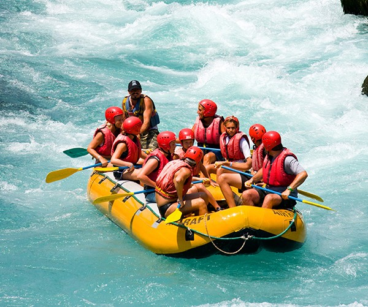
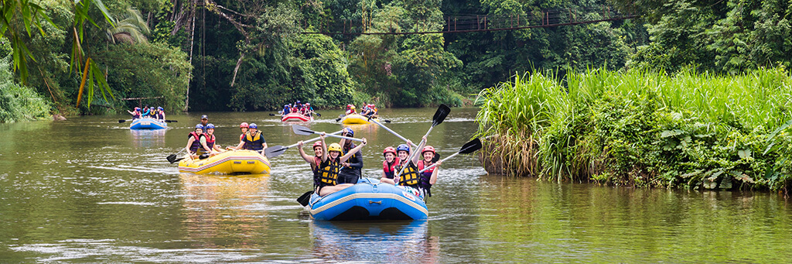

We aim to provide thrilling and safe river adventures that connect people with nature and create unforgettable memories. RIDE THE RAPIDS, FEEL ALIVE!!!


White Water Rafting
History
Founded in 2010 by a group of passionate outdoor enthusiasts, White Water Rafting began with a single raft and a dream to share the thrill of white-water rafting with adventurers of all ages. Over the years, the company has grown into a trusted provider of guided rafting tours, expanding to multiple rivers and offering experiences ranging from family-friendly floats to extreme rapids for seasoned thrill-seekers. With a focus on safety, environmental stewardship, and unforgettable experiences, White Water Rafting has become a leading name in river adventures, inspiring thousands to embrace the excitement and beauty of the outdoors.